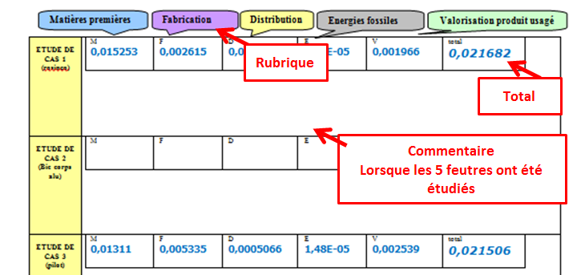

A l'aide de l'onglet « Bilan carbone »,
Compléter le tableau ci-dessous :
- Pour les cinq étapes du cycle de vie (5 couleurs ci-dessous.) du produit de chaque étude de cas, reporter les valeurs (en Kg éq C)
- Réaliser l'impact total (en Kg éq C)
- Vous allez comparer les différents cas étudiés . Pour cela vous allez recenser, dans les 4 rubriques (matière, etc...)et pour le total :
le produit qui obtient le « meilleur » résultat ; Impact vert gras .
le produit qui obtient le « pire » résultat ; Impact rouge gras.
Commenter les résultats obtenus

Created with the Personal Edition of HelpNDoc: Create iPhone web-based documentation